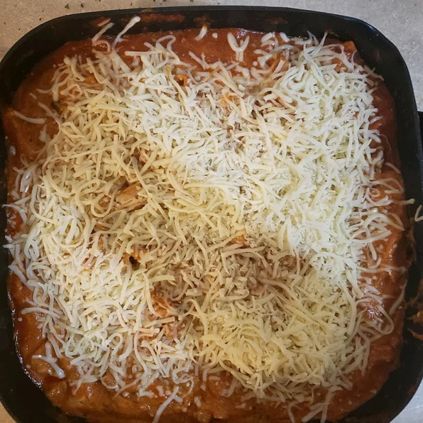

Lasagna

Description
Lasagna with sausage, mushroom, and lots of cheese is fast and easy on the stove top - and there's no compromise on flavor.
Ingredients
- 1 tablespoon olive oil
- 1 medium onion, diced
- 1 pound hot italian sausage
- 2 cups sliced mushroom
- 1 jar Ragu Traditional sauce
- 1 package lasagna sheets
- 8 oz ricotta cheese
- mozzarella cheese
- 1 cup water
Steps
- Heat a large skillet over medium high heat and add olive oil. Swirl to coat. Add the onion and saute until translucent, about 5 minutes. Add the sausage and mushrooms; saute until meat is cooked through, about 5 minutes.
- Stir in the Ragu Traditional sauce, broken lasagna noodles and water. Cover and turn heat down to medium-low.
- Cook for 20 minutes, stirring occasionally, until the pasta is al dente. Remove the lid and add the ricotta, 2/3 of the cheese; stir to combine. Top with remaining mozzarella and serve immediately.